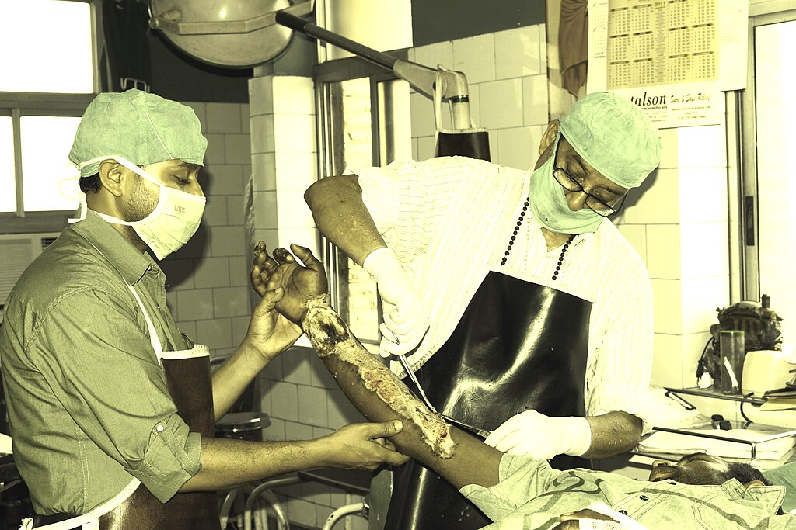

Clinical medicine
Burn Assessment Using Lund and Browder Chart, Rule of Nine and Rule of Palm All Explained in Details
Source presentation · 3 min read
Edits save on this browser. Download a copy for your records.
Burn Assessment


Burn assessment
- Burn is assessed by calculating the total body surface area affected by the partial thickness (second degree) and full thickness (third degree) burns using one of these methods:
- Rule of nine
- Rule of palms
- Lund and Browder chart
- Superficial (first degree) burns are not included in the calculation of TBSA
- Cleaning of debris and soot is mandatory to avoid confusing debris with burns
Calculating TBSA affected by burns benefits
- Calculating TBSA affected by burns is helpful in:
- Understanding the severity of the burn
- Determining the amount of fluid needed for resuscitation using Parkland formula
- Nutritional support
- Pain management
- Infection control
Rule of nine
- Originally called Wallace rule of nine relative to the British plastic surgeon alexander Wallace who first developed this method
- Mainly used as initial assessment tool in pre hospital and emergency department to estimate the TBSA affected by burn, in burn units the Lund Broader chart is used to re calculate the TBSA again because it is more precise
- Quick and easy methods that is used for large surface area burns
| Body part | Estimated body surface area | |
|---|---|---|
| Adults | Children < 10 | |
| Left arm | 9% | 9% |
| Right arm | 9% | 9% |
| Head & neck | 9% | 18% |
| Entire back | 18% | 18% |
| Chest & abdomen | 18% | 18% |
| Genitals | 1% | 0% |
| Left leg | 18% | 14% |
| Right leg | 18% | 14% |
- Example: if patient right arm and right leg both entirely burned with their chest also burned then
- Right arm = 9%
- Right leg = 18%
- Chest only = 9%
- TBSA affected by burn is 36%
- Rule of nine is best accurate in underweight to normal BMI adults
- The accuracy is less for children and obese patients
Rule of palm
- Best used for burns < 10% TBSA
- The size of the patient’s palm (including fingers) equals approx. 1% of patient’s TBSA
- Estimation is made by visual assessment
- More practical in infants and young children because body surface area is small and easily calculated
- It is also used as initial assessment tool for TBSA in pre hospital and emergency department, Lund Browder chart is then used again to re calculate TBSA in burn units once patient reaches there
Lund and Browder chart
- Developed by the American surgeons Charles Lund and newton Browder in 1942
- Takes into account the age of the patient (unlike the other methods)
- In children, decreasing percentage of TBSA for the head and increasing percentage of TBSA for the legs as the child ages
- Best method and most accurate
Continue learning
Practice the topics covered in this lecture.